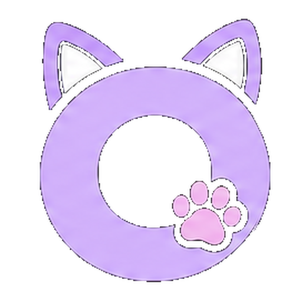

OkayuTube
OkayuTube, Nekomata Okayu, Shiori Novella ve diğer hololive yayıncılarının canlı yayınlarını, arşivlerini ve Shorts videolarını tek yerden izlemek için hazırlanmış ücretsiz bir Windows ve Android uygulamasıdır.
- Canlı ve yaklaşan yayınlar, Oshi modu ve canlı yayın bildirimleri
- Favoriler, Sonra izle, oynatma listeleri, geçmiş ve şarkı favorileri
- Çoklu izleme, mini oynatıcı, izleme istatistikleri ve rozetler
- İsteğe bağlı cihazlar arası eşitleme: kayıtların yalnızca kendi Google Drive’ının gizli uygulama klasöründe durur
Windows için indir (son sürüm)Tüm sürümler ve Android
OkayuTube bağımsız bir hayran uygulamasıdır; COVER Corporation, hololive, YouTube ya da Google ile bağlantılı değildir. Yayın bilgileri Holodex ve YouTube’dan doğrudan cihazından alınır.